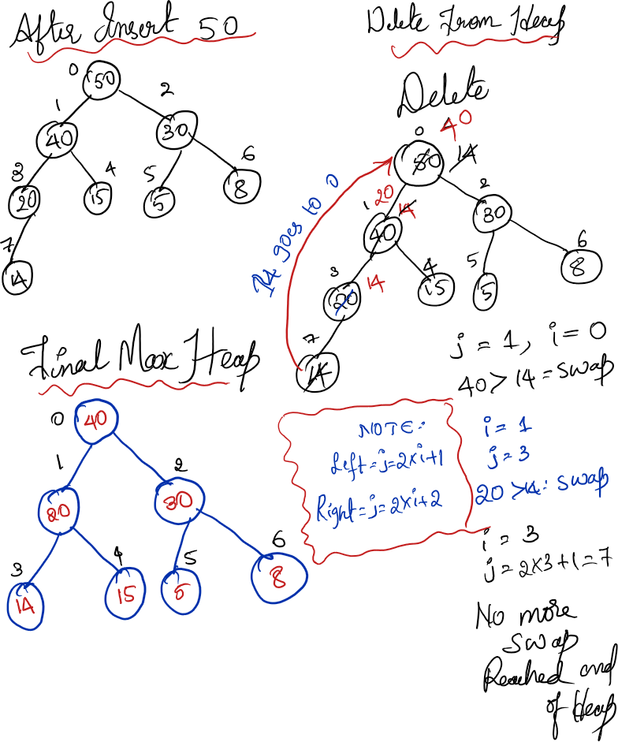

- Heap is complete binary tree
- if you represent the heap in array there should not be any gap.
- Two options Every node should have the element to be greater than or equal to it’s descendants - Max heap. Every node should have element to be smaller than or equal to it’s descendant - Min heap.
- When deleting you should always delete the root element
1 Max Heap implementation using Linkedlist
#include <iostream>
#include <new>
#include <queue>
class Node
{
public:
int data;
Node* leftChild;
Node* rightChild;
Node* parent;
Node(int data):data(data), leftChild(nullptr), rightChild(nullptr), parent(nullptr) {};
};
class MaxHeap
{
public:
Node* head;
MaxHeap():head(nullptr){}
void insertData(int data)
{
Node* newNode = new (std::nothrow) Node(data);
if (newNode == nullptr) {
return;
}
if (head == nullptr) {
head = newNode;
} else {
std::queue<Node*> q;
q.push(head);
while (!q.empty()) {
Node* cur = q.front(); q.pop();
if (cur->leftChild == nullptr) {
cur->leftChild = newNode;
newNode->parent = cur;
break;
} else {
q.push(cur->leftChild);
}
if (cur->rightChild == nullptr) {
cur->rightChild = newNode;
newNode->parent = cur;
break;
} else {
q.push(cur->rightChild);
}
}
// bubble-up to maintain max-heap (swap data values)
Node* child = newNode;
while (child->parent != nullptr && child->parent->data < child->data) {
std::swap(child->parent->data, child->data);
child = child->parent;
}
}
}
~MaxHeap(){
}
void display() {
if (head == nullptr) {
std::cout << "(empty)\n";
return;
}
std::queue<Node*> q;
q.push(head);
while (!q.empty()) {
Node* cur = q.front(); q.pop();
std::cout << cur->data << " ";
if (cur->leftChild) q.push(cur->leftChild);
if (cur->rightChild) q.push(cur->rightChild);
}
std::cout << std::endl;
}
};
int main()
{
MaxHeap obj;
obj.insertData(30);
obj.insertData(15);
obj.insertData(20);
obj.insertData(10);
obj.insertData(12);
obj.insertData(6);
obj.insertData(5);
obj.insertData(40);
obj.display();
}
2 Max Heap - Insert, Delete, Heap Sort
#include<iostream>
#include<vector>
void insertInHeap(std::vector<int> &A, int size)
{
int i = size;
int temp = A[i];
while (i > 0 && temp > A[(i-1)/2]) {
A[i] = A[(i-1)/2];
i = (i-1)/2;
}
A[i] = temp;
}
int deleteFromHeap(std::vector<int> &A, int size)
{
int i = 0;
int maxVal = A[0];
int temp = A[size-1];
A[0] = temp;
int heapSize = size - 1;
int j = 2*i + 1;
while (j < heapSize) {
if (j + 1 < heapSize && A[j+1] > A[j]) {
j = j + 1;
}
if (A[i] < A[j]) {
std::swap(A[i], A[j]);
i = j;
j = 2*i + 1;
} else {
break;
}
}
return maxVal;
}
void heapSort(std::vector<int> &A, int size)
{
int i = 0;
int temp = A[size-1];
std::swap(A[0], A[size-1]);
int heapSize = size - 1;
int j = 2*i + 1;
while ( j < heapSize ) {
if ( j + 1 < heapSize && A[j+1] > A[j]) {
j = j + 1;
}
if (A[i] < A[j]) {
std::swap(A[i], A[j]);
i = j;
j = 2*i + 1;
} else {
break;
}
}
}
int main()
{
std::vector<int> H{14,15,5,20,30,8,40};
int size = H.size();
for (int i = 1; i < size; i++) {
insertInHeap(H,i);
}
int newValue = 50;
H.push_back(newValue);
insertInHeap(H, static_cast<int>(H.size() - 1));
size = static_cast<int>(H.size());
std::cout << "Heap before delete: ";
for (int i = 0; i < size; i++) {
std::cout << H[i] << " ";
}
std::cout << std::endl;
int deletedValue = deleteFromHeap(H, size);
H.pop_back();
size = static_cast<int>(H.size());
std::cout << "Deleted max: " << deletedValue << std::endl;
std::cout << "Heap after delete: ";
for (int i = 0; i < size; i++) {
std::cout << H[i] << " ";
}
std::cout << std::endl;
for (int i = size; i > 1; i--) {
heapSort(H,i);
}
std::cout << "After heapsort: ";
for (int i = 0; i < size; i++) {
std::cout << H[i] << " ";
}
std::cout << std::endl;
return 0;
}2.0.1 Pictortial representation of insert and Delete
